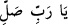
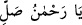
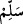

(Salât ve selâm senin üzerine olsun, ey Allâh’ın Rasûlü) ya da benzerlerini
söyleyerek “tam bir teslimiyetle selam verin.”
Hz. Peygamberimiz (s.a.)’e salâttan murâd, kemâl üzere salâttır. Onun için “
” diyerek Hz. Peygamberimiz (s.a.)’e salâta O’nun
âilesine salât da eklenir. Çünkü bir hadisde: “Bana salevât getirdiğiniz zaman umûmî
yapınız.”[276] Aksi halde O’na (s.a.) salât noksan kalmış olur. Nitekim Şerhu’l-
Kuhistânî’de böyle geçmektedir. İmam Sehâvî, Makâsıdü’l-hasene’de şöyle der: “Ben
bu lafızla bu hadîse vâkıf olmadım. Bu hadîsin mânâsının: ‘Bana ve Allâh’ın bütün
peygamberlerine salât edin. Çünkü Allah beni peygamber olarak gönderdiği gibi onları
da göndermiştir’ şeklinde olması mümkündür.”
Salevâtta “
” ve “
” denilmeyip “
(Allâh’ım salât et!)”
ifâdesi tahsis edilmiştir. Çünkü Allah ismi ulûhiyete delâlet eden câmi bir isimdir. Lâ
ilâhe illallah sözündeki Allah ismi İslâm’ın alâmetidir. Onun için Rasûlullah (s.a.)’e
salevât getirme sırasında söylenmesi uygun düşer. Çünkü Hz. Peygamber (s.a.) kemal
sıfatlarını câmi/kendisinde toplayan, cemâl ve celâlin esrarını içine almıştır.
Salevâtta özellikle Muhammed ismi tahsis edilmiştir. Çünkü O’nun mânâsı tekrar
tekrar övülen demektir. Bu yüzden medih ve övme makamına münasip olmuştur.
Hz. Peygamber (s.a.)’in “âilesinden (âl)” murad, ümmetinden müttakî olanlardır.
Elbette O’nun âilesine Hâşimoğulları, Hz. Peygamber (s.a.)’in pek nezih eşleri ve
diğerleri dâhildir.
Şerhu’l-Keşşâf’ta ve başka eserlerde şöyle denilir:“
” sözünün mânâsı,
‘Allâh’ım dünyâda O’nun dînini ve zikrini yükseltmek, dâvetini ızhâr etmek ve şerîatını
bâkî kılarak O’nu yücelt; âhirette de O’nu ümmetine şefâatçi kılarak, ecir ve sevabını
katlayarak, evvelkilere ve sonrakilere O’nun üstünlüğünü ızhâr ederek, O’nu bütün
nebîlere ve rasullere takdim ederek yücelt.’ demektir.
Senânın hakîkati, bizim gücümüzü aşınca onu Allah Teâlâ’ya havale etmekle
emrolunduk. İşte Allah bizim isteğimizle O’na salât eder.
Rahmân’dan O’nun cenâbına selam olsun.
Çünkü benim selâmım O’nun kapısına lâyık değildir.
“(Âyette) salâtın emredilmesinin faydası nedir?” diye sorarsan, şöyle cevap veririm:
Hakîkatte Allah kendi zâtına hamd eden olduğu halde hamd muhabbetini ızhâr etmek
üzere “Elhamdülillah (Hamd, Allâh’a mahsustur) de.” (Lokman, 31/25) buyurarak
hamd edilmesini taleb buyurduğu gibi salâta muhabbeti ızhâr için onu emir buyurmuştur.
“
” kelimesinin mânâsı ise Kuhistânî’nin dediği gibi: ‘Yâ Rabbi, O’nu istenmeyen
bütün kötülüklerden selâmette kıl’ demektir. Bazıları ise şöyle demiştir: “Burada